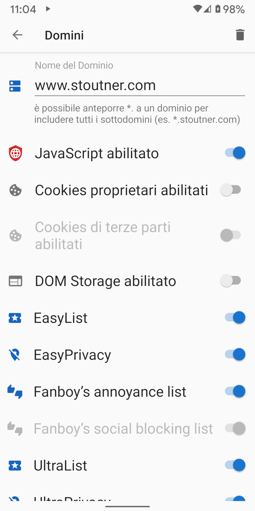

Clear Browser dovrebbe essere utilizzato di default per navigare con JavaScript, cookies, e DOM storage disabiltati. In ogni caso alcuni siti web necessitano legittimamente di queste funzionalità per essere visualizzati correttamente. Le impostazioni dei Domini permettono di abilitare automaticamente specifici set di funzionalità per i domini che sono stati definiti.
Quando si accede a un dominio per cui sono state specificate impostazioni personalizzate la casella di testo dell'indirizzo URL si colora di verde.